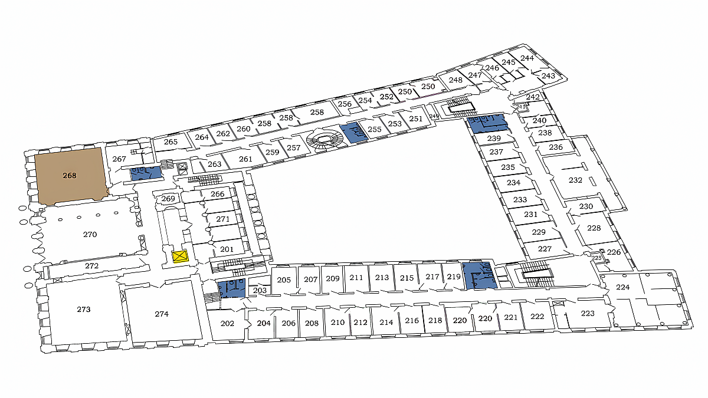

About the Workshop
This one‑day workshop aims to discuss compositionality, structured representation, and the integration of neural and symbolic reasoning in modern learning systems.
Our research:
Compositionality is a fundamental component of reasoning and continues to challenge neural models. Our results suggest that hybrid architectures integrating symbolic inference with neural learning offer a promising path toward overcoming these limitations and, more broadly, a compelling direction for future exploration—shedding light on how structured reasoning can emerge from pattern-based learning systems in AI.
The research project “Hybrid Models of Reasoning”, funded by the National Science Centre, Poland, is conducted by Maciej Malicki (University of Warsaw), Jakub Szymanik (University of Trento), and Manuel Vargas Guzmán (University of Warsaw).
Published Papers
-
[1] Compositionality in a simple corpus
Show Abstract
We investigate the capacity of neural networks (NNs) to learn compositional structures by focusing on a well-defined simple logical corpus, and on proof-centered compositionality. We conduct our investigation in a minimal setting by creating a simple logical corpus, where all compositionality-related phenomena come from the structure of proofs as all the sentences of the corpus are propositional logic implications. By training NNs on this corpus we test different aspects of compositionality, through variations of proof lengths and permutations of the constants.
-
[2] Testing the limits of logical reasoning in neural and hybrid models
Show Abstract
We study the ability of neural and hybrid models to generalize logical reasoning patterns. We created a series of tests for analyzing various aspects of generalization in the context of language and reasoning, focusing on compositionality and recursiveness. We used them to study the syllogistic logic in hybrid models, where the network assists in premise selection. We analyzed feed-forward, recurrent, convolutional, and transformer architectures. Our experiments demonstrate that even though the models can capture elementary aspects of the meaning of logical terms, they learn to generalize logical reasoning only to a limited degree.
-
[3] Hybrid Models for Natural Language Reasoning: The Case of Syllogistic Logic
Show Abstract
Despite the remarkable progress in neural models, their ability to generalize—a cornerstone for applications like logical reasoning—remains a critical challenge. We delineate two fundamental aspects of this ability: compositionality, the capacity to abstract atomic logical rules underlying complex inferences, and recursiveness, the aptitude to build intricate representations through iterative application of inference rules. In the literature, these two aspects are often confounded together under the umbrella term of generalization. To sharpen this distinction, we investigated the logical generalization capabilities of pre-trained large language models (LLMs) using the syllogistic fragment as a benchmark for natural language reasoning. Though simple, this fragment provides a foundational yet expressive subset of formal logic that supports controlled evaluation of essential reasoning abilities. Our findings reveal a significant disparity: while LLMs demonstrate reasonable proficiency in recursiveness, they struggle with compositionality. To overcome these limitations and establish a reliable logical prover, we propose a hybrid architecture integrating symbolic reasoning with neural computation. This synergistic interaction enables robust and efficient inference—neural components accelerate processing, while symbolic reasoning ensures completeness. Our experiments show that high efficiency is preserved even with relatively small neural components. As part of our proposed methodology, this analysis gives a rationale and highlights the potential of hybrid models to effectively address key generalization barriers in neural reasoning systems.
-
[4] Teaching Small Language Models to Learn Logic through Meta-Learning
Show Abstract
Large language models (LLMs) are increasingly evaluated on reasoning tasks, yet their logical abilities remain contested. To address this, we study LLMs' reasoning in a well-defined fragment of logic: syllogistic reasoning. We cast the problem as premise selection and construct controlled datasets to isolate logical competence. Beyond evaluation, an open challenge is enabling LLMs to acquire abstract inference patterns that generalize to novel structures. We propose to apply few-shot meta-learning to this domain, thereby encouraging models to extract rules across tasks rather than memorize patterns within tasks. Although meta-learning has been little explored in the context of logic learnability, our experiments show that it is effective: small models (1.5B-7B) fine-tuned with meta-learning demonstrate strong gains in generalization, with especially pronounced benefits in low-data regimes. These meta-learned models outperform GPT-4o and o3-mini on our syllogistic reasoning task.
Program
-
9:00–9:40Dieuwke Hupkes (Meta AI Research)
TBA -
9:50–10:10Coffee break
-
10:20–11:00Marcin Miłkowski (Polish Academy of Sciences)
Composing Moves: How Procedural Memory Builds Novel Action -
11:10–11:40Manuel Vargas Guzmán (University of Warsaw)
TBA -
11:50–12:20Leonardo Bertolazzi (University of Trento)
Logic, Plausibility, and Generalization: Making LLMs More Systematic -
12:20–14:00Lunch break
-
14:00–14:40Ian Pratt-Hartmann (University of Manchester & University of Opole)
Natural Language Inference: from Aristotle to AI -
14:50–15:30Andrea de Varda (MIT)
Behavioral and structural signatures of human-like reasoning in LLMs -
15:30–15:50Coffee break
-
15:50–16:30Justyna Grudzińska-Zawadowska (University of Warsaw)
TBA -
16:40–17:20Discussion
Invited Speakers
For most of recorded history, logic was seen as an attempt to systematize the entailment patterns observed in natural—that is to say, human—languages. Only with the rise of quantification theory and the emergence of mathematical logic at the end of the nineteenth century did the syntactic structure of natural language lose its pre-eminence. Recently, however, there has been a resurgence of interest in natural language reasoning, as a result of two very different developments. The first is the discovery of a rich, complexity-theoretic landscape among fragments of natural languages defined by the syntactic devices they feature: quantifying determiners, relative clauses, ditransitive verb, passive constructions, anaphora, and so on. The second is the recent rise of transformer-based language models, which can be fine-tuned to solve a range of natural language inference tasks. In this talk I combine both these strands of research to direct the spotlight back on logical systems based on natural, rather than, formal, languages. As I shall argue, the study of such systems opens up new avenues of logical research.
What does it mean for a model to reason in a human-like way? A core signature of cognitive effort in psychology is reaction time: harder problems take longer because they require more intermediate steps. We show that large reasoning models capture this cost of thinking. Across seven reasoning domains, the length of a model's chain of thought predicts human reaction times, tracking both item-level difficulty and broader task-level demands. This alignment is robust across models and is substantially stronger for reasoning models than for base LLMs. Motivated by this correspondence in behavior, we ask whether similarities between humans and models extend to the internal organization of their reasoning systems. Intelligent behavior in humans is supported by a set of specialized brain networks that segregate language processing, domain-general reasoning, social reasoning, and intuitive physics. Drawing inspiration from neuroscience, we used task-based functional localization in LLMs to identify units that selectively respond to tasks in each of these domains. We found that the units' selectivity profiles exhibit the same within-domain overlap and across-domain separability observed in the human brain. Together, these findings show that LLMs and their reasoning-optimized variants not only mirror patterns of cognitive effort but also develop emergent functional structure reminiscent of the modular architecture supporting human thought.
Compositionality is fundamental to both human and artificial cognition, yet theories of procedural memory often underestimate its representational demands. This presentation argues that any adequate account of skilled action must satisfy three conceptual desiderata rooted in compositionality: method-specific directivity (disambiguating kinematically equivalent execution paths), hierarchical sequencing (implementing conditional branching and nested timing), and dual error evaluation (distinguishing execution noise from content mismatch). Empirical patterns from apraxia research—where patients execute isolated movements but cannot combine them into novel tool-use sequences or meaningless gestures—reveal compositionality as a distinct theoretical requirement, not a product of associative learning. The analysis demonstrates that anti-representationalist appeals to "smooth coping" or affordance-responsiveness evade these constraints by masking the necessary representational architecture. Action guidance requires hybrid concepts merging descriptive properties with directive force; otherwise, the interface between linguistic instruction and motor execution remains unexplained. By articulating the minimal conceptual requirements for procedural memory, this framework compels both embodied cognition and artificial intelligence research to confront the compositional logic of action, precluding theoretical shortcuts and establishing a foundation for genuine practical rationality in biological and artificial agents.
Large language models (LLMs) can now tackle a wide range of complex tasks once exclusive to human intelligence, including mathematics, programming, and social and emotional reasoning. However, this impressive performance is often paired with surprising failures and a lack of systematicity. In this talk, I argue that we can learn valuable lessons from studies of human cognition to better understand and improve these capabilities in LLMs. I will present two applications of cognitively-inspired approaches, each addressing a different aspect of systematic reasoning in LLMs: 1. Investigating content effects in deductive reasoning. This line of work challenges the idea that LLMs learn to reason formally by examining how semantic content influences LLM performance on logical tasks, mirroring well-documented phenomena in human reasoning. Using controlled syllogistic reasoning experiments, our findings reveal that LLMs conflate logical validity with real-world plausibility. Through representational analysis, we demonstrate how validity and plausibility become entangled in the model's internal representations and explore interpretability techniques as tools for debiasing models to reason more formally. 2. Teaching systematic generalization through meta-learning. We investigated whether meta-learning could teach small language models to systematically apply logical rules. Inspired by systematic generalization in human cognition, we show that meta-learning enables models to apply inference rules from syllogistic logic to entirely novel premise structures, achieving both compositional generalization (handling shorter inference chains) and recursive generalization (handling longer chains). Together, these studies demonstrate how insights from human cognition can help us better understand and design models that are more systematic reasoners.
TBA
Venue
The workshop will be held at the
Institute of Philosophy and Sociology, Polish Academy of Sciences, located in the
Staszic Palace, a historic building in the heart of Warsaw:
ul. Nowy Świat 72
00-330 Warszawa
Poland
How to reach the venue: Google Maps
The venue is conveniently located near the University of Warsaw, with bus stops (Uniwersytet) and the M2 subway station (Nowy Świat-Uniwersytet) in close proximity. Tickets can be purchased from ticket machines (3.40 PLN for 20 minutes or 4.40 PLN for 70 minutes). The entrance to the Staszic Palace, home of the Institute, is easily identifiable by the Nicolaus Copernicus Monument .
The workshop sessions will take place on the third floor, in Room 268.
Show Room Map

Contact
For questions about the workshop, please contact us at:
compositionalityworkshop@gmail.com